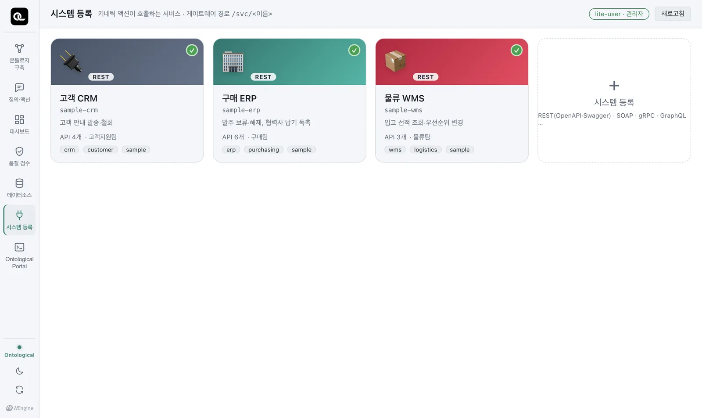
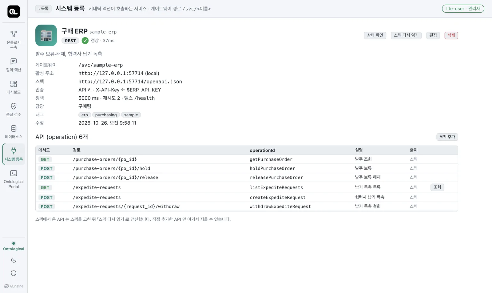

액션이 호출할 업무 시스템(마이크로서비스)을 등록합니다. 데이터소스가 “읽는 곳”이라면 시스템은 “일을 시키는 곳”입니다. OpenAPI 스펙, 인증, 연결 테스트를 다룹니다.
왜 시스템을 따로 등록하나#
데이터 패브릭은 원천을 읽기만 합니다(6장). 발주를 보류하거나 선적 우선순위를 올리는 일은 그 데이터의 주인인 업무 시스템이 해야 합니다. 그래야 그 시스템의 업무 규칙(검증, 승인, 이력)이 지켜집니다.
그래서 Ontological Studio의 액션은 데이터베이스에 직접 쓰지 않고, 등록된 시스템의 API를 부릅니다. 이 장은 그 API를 등록하는 법입니다.
시스템 등록 화면#
홈의 「시스템 등록」 카드를 엽니다. 예제 시스템 세 개가 이미 등록돼 있습니다.

| 시스템 | 하는 일 (operationId) | 인증 방식 |
|---|---|---|
sample-erp 구매 ERP |
발주 보류·해제(holdPurchaseOrder, releasePurchaseOrder), 협력사 납기 독촉·철회(createExpediteRequest, withdrawExpediteRequest) |
API 키 (X-API-Key 헤더) |
sample-wms 물류 WMS |
선적 조회, 우선순위 변경(setShipmentPriority) |
Basic 인증 |
sample-crm 고객 CRM |
고객 안내 발송·철회(createNotice, withdrawNotice) |
Bearer 토큰 |
실제 회사처럼 시스템마다 인증 방식이 다릅니다. 각 시스템은 예제 업무 DB의 자기 스키마만 고칩니다(ERP는 erp, WMS는 wms).
시스템 하나 들여다보기#
「구매 ERP」 카드를 누릅니다.

| 항목 | 뜻 |
|---|---|
| 게이트웨이 경로 | 액션 실행기가 이 시스템을 부를 때 쓰는 이름 (/svc/sample-erp) |
| 활성 주소 | 실제 서비스 주소 |
| 스펙 | OpenAPI 문서 주소. 여기서 API 목록을 읽습니다. |
| 인증 | API 키 · X-API-Key ← $ERP_API_KEY — 비밀 값은 등록 정보에 적지 않고 환경 변수 이름만 남깁니다. 값은 실행기만 갖고 있다가 호출하는 순간에 붙입니다. |
| 정책 | 타임아웃 5000ms, 재시도 2번, 상태 점검 경로 /health |
| API (operation) | 스펙에서 읽은 API. 메서드·경로·operationId·설명 |
「상태 확인」으로 지금 살아 있는지, 「스펙 다시 읽기」로 바뀐 스펙을 다시 가져옵니다. 스펙에 빠진 API는 「API 추가」로 메서드와 경로를 직접 적어 넣을 수 있습니다.
새 시스템 등록하기#
시스템 목록의 「＋ 시스템 등록」을 누르면 데이터소스를 등록할 때처럼 단계가 나옵니다.
- 기본 정보 — 이름(영문 소문자·숫자·하이픈), 표시 이름, 담당 팀, 연락처, 태그, 아이콘.
- 스펙 — OpenAPI(Swagger) 파일을 끌어다 놓거나 스펙 주소를 적습니다. 호출할 수 있는 API 목록이 바로 읽힙니다. REST가 아닌 SOAP·gRPC·GraphQL 시스템도 등록은 되지만, 실행 어댑터가 붙기 전까지는 액션에 쓰지 못한다고 표시됩니다.
- 인증 — API 키, Basic, Bearer, OAuth 클라이언트 자격 증명, 로그인 토큰 중에서 고르고, 비밀 값이 들어 있는 환경 변수 이름을 적습니다.
- 연결 테스트 — 저장하기 전에 스펙을 읽고 상태 점검을 불러 봅니다. 통과하면 저장합니다.
공개 API로 연습하기
회사 시스템이 없다면 공개 API로 연습할 수 있습니다. 예를 들어 Swagger Petstore(https://petstore3.swagger.io/api/v3/openapi.json)를 등록하면 스펙에서 API 19개를 읽고 연결 테스트가 통과합니다. 액션을 만들 대상 시스템으로 쓰기에는 데이터가 공용이라 적당하지 않으니, 등록·조회 연습까지만 하세요.
비밀 값은 어디에?
등록 정보에는 $ERP_API_KEY 같은 이름만 남습니다. 예제 시스템의 실제 비밀 값은 설치할 때 무작위로 만들어져 데이터 폴더의 secrets.json에 있고, 실행기에 환경 변수로만 넘어갑니다. 여러분이 등록하는 시스템의 비밀 값은 studio.env에 ERP_API_KEY=...처럼 적어 두면 됩니다.
확인 문제
- 물류 WMS 시스템을 열어, 우선순위를 바꾸는 API의 메서드와 경로를 찾으세요.
- 고객 CRM의 인증 방식은 무엇이고, 비밀 값은 등록 정보 어디에 보이나요?
- 액션이 ERP 데이터베이스에 직접
UPDATE하지 않고 굳이 API를 부르는 이유를 두 가지 적어 보세요.
정답 보기
POST /shipments/{shipment_no}/priority(operationIdsetShipmentPriority).- Bearer 토큰. 비밀 값 자체는 보이지 않고 환경 변수 이름만 보입니다.
- ⓐ 업무 시스템의 검증·승인·이력 같은 업무 규칙을 지키기 위해. ⓑ 권한과 책임이 그 시스템에 있기 때문에(누가 언제 무엇을 바꿨는지가 그 시스템의 기록으로 남음). 그 밖에 ⓒ 시스템 내부 구조(테이블)가 바뀌어도 API는 유지되므로 액션이 덜 깨집니다.